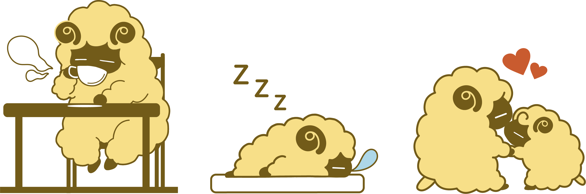

CONCEPT
ここは最高の癒し空間。
「ひつじ喫茶」は、寝る事ができる、羊と触れ合える、食事ができるそんな3つの癒しを取り入れたカフェブランドです。
また、寝る空間、羊がいる空間、食事をする空間はそれぞれ区分けされています。主に若い女性をターゲットとし、ゆったり安らぐ事のできる時間を提供します。

「ひつじ喫茶」は、寝る事ができる、羊と触れ合える、食事ができるそんな3つの癒しを取り入れたカフェブランドです。
また、寝る空間、羊がいる空間、食事をする空間はそれぞれ区分けされています。主に若い女性をターゲットとし、ゆったり安らぐ事のできる時間を提供します。